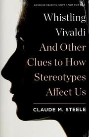

Whistling Vivaldi: And Other Clues to How Stereotypes Affect Us
Book·Claude M. Steele, 2010·吹口哨的维瓦尔第

Steele tells the story of how stereotype threat was discovered and how it affects performance on tests and at work.
- Author
- Claude M. Steele
- Year
- 2010
- Difficulty
- Beginner
- Kind
- Primary text
- Schools
- Prejudice Research
- Core theories
- Stereotype Threat
Editions
- English edition Whistling Vivaldi: And Other Clues to How Stereotypes Affect Us Claude M. Steele · W. W. Norton, first edition · 2010 Open Library ↗